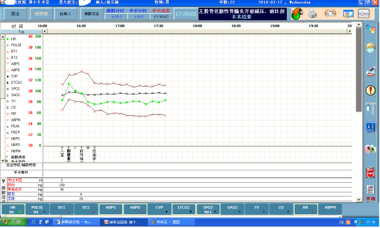

关于
Keep calm and carry on
我叫胡婷，故乡河南信阳。
我的联系电话是13366280030，电子邮件是julale@163.com.
个人简介
-
年龄
26岁
-
学历
本科
-
坐标
北京
-
状态
离职
教育经历： 2009.9-2013.8 河南大学 计算机科学与技术
培训经历： 2012.10-2013.1 江苏无锡培训中心 JavaSE+Struts+Spring+Hibernate
培训经历： 2017.2-2017.4 百度前端技术学院 HTML/CSS+JavaScript
工作经历： 2013.10-2016.3 海军总医院计算机管理中心 助理工程师
参会经历： 2015.8.3-2015.8.5 江苏苏州 全国卫生信息技术交流大会
专业技能
1．熟悉XML、Html、JavaScript、JQuery、Ajax、BootStrap等前端技术。
2．熟悉Java、JSP/Servlet、Struts+Spring+Hibernate、SpringMVC+Mybatis框架。webstorm等工具进行前端页面手工式的开发。
3．熟练使用Editplus、DreamWeaver、NetBeans、Eclipse、MyEclipse等开发工具。
4．熟悉MySQL、SQLServer、oracle数据库，熟练使用Navicat、PLSQL管理工具。
5．熟练使用Visio、PowerDesigner等建模工具进行需求分析和模型设计。
6．熟悉Juit调试工具，SVN、Maven项目管理工具。
7. 熟悉软件开发流程，具有良好的面向对象编程思想和良好的编码习惯。
开发项目和Demo
倒计时时钟(2017.2-2017.2)
闲时自己练习的DEMO

院内网导航(2014.6-2014.6)
应用环境：
项目描述：做一个院内网导航，自适应浏览器和分辨率。
责任描述：
1.查询资料知bootmetro模板不错，研究源码，换掉icon和链接。
2.发现png图片在IE6下显示有问题，查资料了解学习相关的CSS hack知识。
3.在IETester下测试页面兼容性，最终如期完成。

在线订票系统(2012.10-2013.1)
项目架构：Struts+Spring+Hibernate、B/S
开发环境：Windows XP、JDK1.6
开发工具：MyEclipse、MySQL
项目描述：实时查票订票，生成购买订单。分前端展示和后台管理两个大的模块，用户平台包括用户登录、票项查询、实时定票、订单查询、账户充值等功能，管理平台包括票项管理、用户管理、订单管理等管理员功能。
责任描述：
1．注册登录：校验用户信息，添加用户，登录认证。
2．票项查询：查询7天内可选票项，创建订单项。
3．在线定票：订单项查询、更新和删除，订单提交。
外接设备安全管理系统(2015.5-2015.7)
项目架构：Struts+Spring+Hibernate、B/S
开发环境：Windows XP、JDK1.7
开发工具：MyEclipse、MySQL
项目描述：使用电脑拷贝资料，学习交流的同时也给医院的网络安全带来了隐患，要求禁用科室电脑U口，对于有开通需求的科室准予申请开通。
责任描述：
1．需求分析、表字段设计、建表。
2．U口管理：U口申请查询、修改和删除。
网上商城(2016.5-2016.9)
项目架构：SpringMVC+Mybatis、B/S
开发环境：Windows XP、JDK1.7
开发工具：Eclipse EE、MySQL
项目描述：分前端展示和后台管理两个大的模块，用户平台包括用户登录、商品查询、购买商品、生成订单、在线支付，管理平台包括用户管理、商品管理、订单管理等。
责任描述：
1．商品查询：首页新、热门商品查询、一级和二级分类商品查询。
2．商品购买：加入购物车生成订单项，订单提交生成订单。
管理项目
-

项目&责任：OA(2014.1-2016.3)，行政办公、手机短信等辅助业务的管理工具。接手前部分模块已上线，完成剩下模块的上线、系统接口、验收及相关数据查询统计。
行动&成效：
1．模块的上线及测试制定详细计划与乙方随时联络，bug问题及时解决反馈，组织培训，解决bug13个页面细节改动20处，组织培训2次。
2．制定计划，联系乙方和第三方做接口，共完成2个短信接口，1个屏幕终端接口。
3．按照合同内容逐一验收功能模块，按期验收。 -

项目&责任：数据挖掘(2014.8-2016.3)，分析挖掘门诊、住院、药品等数据，解决信息不透明和孤岛问题，二期项目，完成二期功能模块测试、上线及新需求。
行动&成效： 由于乙方美工不足，从前端、后端到数据各个方面抓起。
1．提出页面结构，样式修改6处。
2．按二期合同测试功能模块，并积极组织讨论，因医保接口不开放基本完成验收。
3．新的数据挖掘分析需求需要自己编写SQL，查遍了所有的数据结构表，提高了自己的SQL、数据整合分析及业务水平。 -

项目&责任：手术麻醉(2014.1-2016.3)，采集监护仪等设备的数据，记录病人治疗的时间点及生命体征数据等，已验收，解决使用bug及新集成平台接口。
行动&成效：
1．及时向乙方反馈bug,经常与临床和乙方沟通了解软件使用情况，由于乙方技术能力不足，系统时常出问题，采取维护记录表规避责任问题，明白了工作及管理流程的重要意义。
2．制定计划，联系乙方和第三方做接口，按期完成集成平台接口。